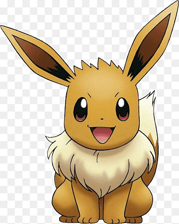
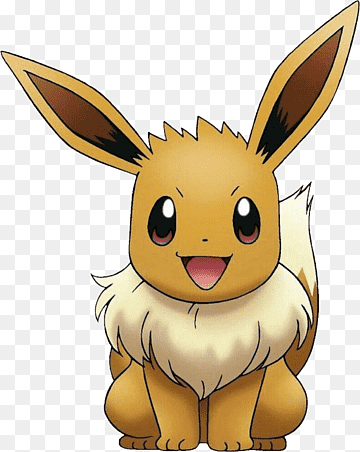

En esta página podra encontrar a tus Pokemon favoritos de la infancia en formato carta TCG como nunca las habías visto. Podras encontrar a tus Pokemons favoritos como Charmander o Pikachu!!!
La historia de Pokémon (abreviatura de Pocket Monsters) comienza en Japón, país en el que un amante de los videojuegos llamado Satoshi Tajiri, con apenas 25 años tuvo la idea de diseñar un sistema en el que varios jugadores pudieran interactuar en un mundo compartido. Era una idea ambiciosa para 1990, pero fue el germen de lo que años más tarde se convertiría en un suceso a nivel mundial. Tajiri tuvo la suerte de trabajar bajo la dirección del mítico Shigeru Miyamoto (padre de Mario Bros) en varios videojuegos y luego de años de elaborar la idea, presentó en febrero de 1996 su primer Pokémon para la consola portátil Game Boy. Dos versiones salieron al mercado, Pokémon: "Red" y "Green", y luego, se sumaría el "Blue".
| Primera Gen | Pokémon Rojo | Pókemon Verde | Pókemon Amarillo | Pokémon Azul | |
|---|---|---|---|---|---|
| Segunda Gen | Pokémon Oro | Pokémon Plata | Pokémon Cristal | ||
| Tercera Gen | Pokémon Rubí | Pokémon Zafiro | Pokémon Esmeralda | Pokémon RojoFuego | Pokémon VerdeHoja |
| Cuarta Gen | Pokémon Diamante | Pokémon Perla | Pokémon Platino | Pokémon Oro HeartGold | Pokémon Plata SoulSilver |
| Quinta Gen | Pokémon Negro | Pokémon Blanco | Pokémon Negro2 | Pokémon Blanco2 | |
| Sexta Gen | Pokémon X | Pokémon Y | Pokémon Rubí Omega | Pokémon Zafiro Alfa | |
| Séptima Gen | Pokémon Sun | Pokémon Moon | Pokémon UltraSun | Pokémon UltraMoon | |
| Octava Gen | Pokémon Sword | Pokémon Shield | Pokémon Lets go Pikachu | Pokémon lets go Eevee | |
| Novena Gen | Pokémon Scarlet | Pokémon Violet | Pokémon Diamante Brillante | Pokémon Perla Reluciente |
eguramente a finales de febrero, con motivo del Día de Pokémon, tengamos un Pokémon Presents en el que veremos claramente los planes de la franquicia para este año. ⏳ Pese a ello, hay cosas que creo que pueden estar claras (luego no acertaré nada, pero bueno). 😅 Lo primero, que es muy probable que este 2023 recibamos el Pase de Expansión de “Pokémon Escarlata y Púrpura”.❤️ ¿De qué podrían tratar estos? Hay rumores que apuntan a la región de Kalos, aunque personalmente veo muy improbable que esto sea así.❌
-Pokémon es una marca muy popular y reconocida en todo el mundo, por lo que una página web de cartas Pokémon tendría el potencial de atraer a una amplia audiencia de fans.
-Una página web de cartas Pokémon puede ofrecer información especializada sobre cada una de las cartas, incluyendo sus habilidades, estadísticas, rareza y más. Los fans pueden usar esta información para mejorar su juego y coleccionar cartas.
-Las cartas Pokémon son muy populares entre los coleccionistas, por lo que una página web de cartas Pokémon podría tener secciones dedicadas a la historia y evolución del juego de cartas, así como a la clasificación de cartas por rareza, edición y otros criterios.

 


.png)